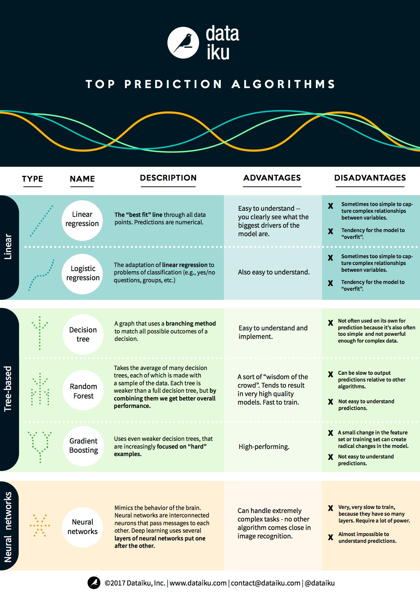
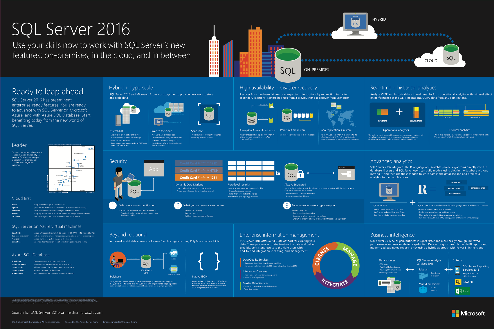

Media
Media Content from my Learning Journey
From my perspective, incorporating videos, links, and images into my data analytics journey has been invaluable. Videos have often broken down complex topics into manageable, engaging lessons that make it easier to grasp advanced concepts. Links have expanded my knowledge base, connecting me to a wealth of additional information and cutting-edge developments in the field. Meanwhile, images, particularly infographics and charts, have helped me visualize data patterns and statistics more effectively, enhancing both my comprehension and retention of information. These multimedia resources have not only enriched my learning experience but also kept it dynamic and interactive, which has been essential for deepening my understanding and skills in data analytics.
Videos
Three Videos from my Learning Journey
Video 1: Ted Talk: The Power in Effective Data Storytelling by Malavica Sridhar
The Power in Effective Data Storytelling by Malavica Sridhar delves into the art of storytelling with data, emphasizing the importance of weaving data into compelling narratives. This Ted Talk has honed my ability to present data in a way that is both informative and engaging, ensuring that the insights derived from analyses are accessible and impactful to all audiences. It instilled in me the significance of narrative structures and visual storytelling techniques in data presentation.
Video 2: Ted Talk: Using Big Data to Improve Healthcare Services by Tiranee Achalakul
Using Big Data to Improve Healthcare Services by Tiranee Achalakul explores the application of big data in enhancing healthcare services. This presentation expanded my understanding of the practical implications of data analytics in real-world scenarios, particularly in healthcare. It has equipped me with the knowledge of how big data can be leveraged to make informed decisions, improve patient care, and streamline healthcare operations, highlighting the transformative power of analytics in societal well-being.
Video 3: Machine Learning Algorithms for Data Science Algorithms by Simplilearn
Moreover, the video about Machine Learning Algorithms for Data Science Algorithms by Simplilearn serves as a comprehensive tutorial on machine learning algorithms, foundational to data science. This video has significantly contributed to my technical skill set, providing me with a deep dive into various machine learning algorithms, their applications, and their role in data analytics. It has fostered my analytical thinking and problem-solving skills, enabling me to apply these algorithms in predictive modelling and data analysis projects effectively.
Links
Three Links from my Learning Journey
Link 1: DataCamp - Data Visualization Courses
Data Visualization Courses by DataCamp offer an extensive range of tutorials and hands-on projects focused on data visualization. This platform has been pivotal in enhancing my ability to transform complex datasets into clear, impactful visual representations. Through interactive learning, I've mastered various visualization tools and libraries, particularly in Python, enabling me to communicate data insights more effectively. This skill is crucial for making data-driven decisions and presenting findings to both technical and non-technical audiences.
Link 2: DataCamp - Python Programming
The Python Programming track by DataCamp has been instrumental in developing my programming skills, specifically tailored to data analysis and machine learning. The structured courses have provided a solid foundation in Python, from basic syntax to advanced data manipulation and analysis techniques using Pandas and NumPy. This comprehensive learning path has equipped me with the necessary tools to tackle complex data challenges, automate data processing, and implement machine learning algorithms efficiently.
Link 3: University of San Diego: Healthcare Data Analytics
The section on the website of the University of San Diego about Healthcare Data Analytics has broadened my understanding of the application of data analytics in the healthcare sector. This resource highlighted the transformative potential of analytics in improving patient care, operational efficiency, and healthcare policies. It offered insights into the latest trends and technologies in healthcare analytics, including predictive modeling and data governance. This knowledge is invaluable for contributing to innovations that enhance health outcomes and streamline healthcare systems.
Images
Three Images from my Learning Journey
Image 1: Infographic about Machine Learning
Infographic about Machine Learning from Data Flair provides a visually engaging overview of machine learning (ML), covering its types, algorithms, and applications. This infographic has played a crucial role in simplifying complex ML concepts, making them accessible and understandable. It has helped me grasp the foundational elements of ML, differentiate between supervised, unsupervised, and reinforcement learning, and recognize the practical implications of various algorithms. This knowledge is essential for developing ML models and understanding their real-world applications across industries.
Image 2: Top Prediction Algorithms
Infographic about Top Prediction Algorithms shared by Ronald van Loon on Twitter offers a concise summary of essential prediction algorithms used in data analytics. By distilling complex information into an easy-to-digest format, this infographic has enhanced my understanding of algorithms such as linear regression, decision trees, and neural networks. It has equipped me with the insights to select appropriate algorithms for specific predictive modeling tasks, optimizing the accuracy and efficiency of my data analysis projects.
Image 3: SQL Server
Infographic about SQL Server by Build5Nines outlines the features and benefits of SQL Server 2016, focusing on its application in managing and analyzing data. This infographic has provided me with a clear understanding of SQL Server's capabilities, including advanced data security, in-memory performance enhancements, and rich visualizations. Acquiring knowledge about SQL Server has been instrumental in improving my data management skills, allowing me to efficiently store, retrieve, and manipulate large datasets within a secure and scalable environment.